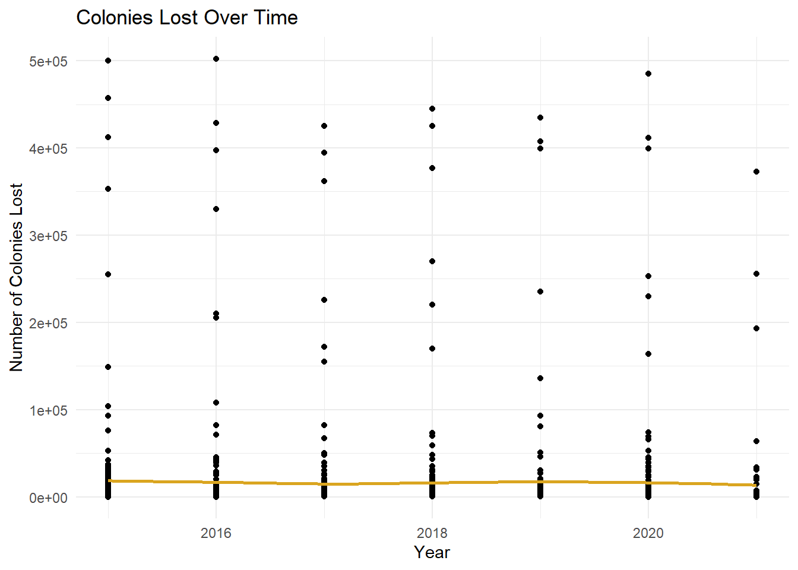
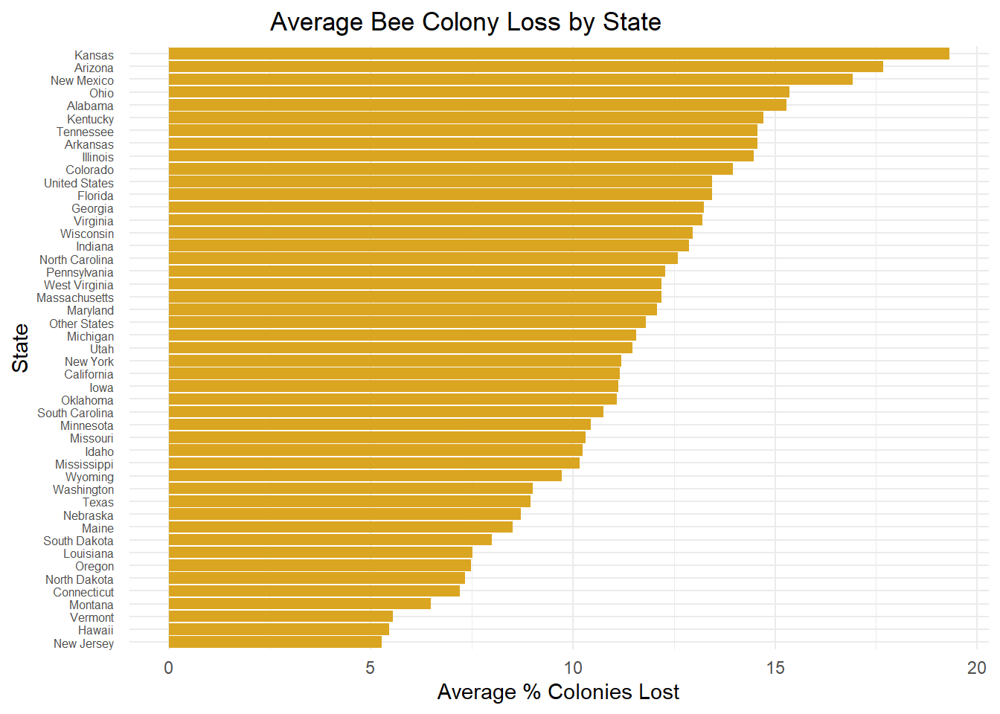
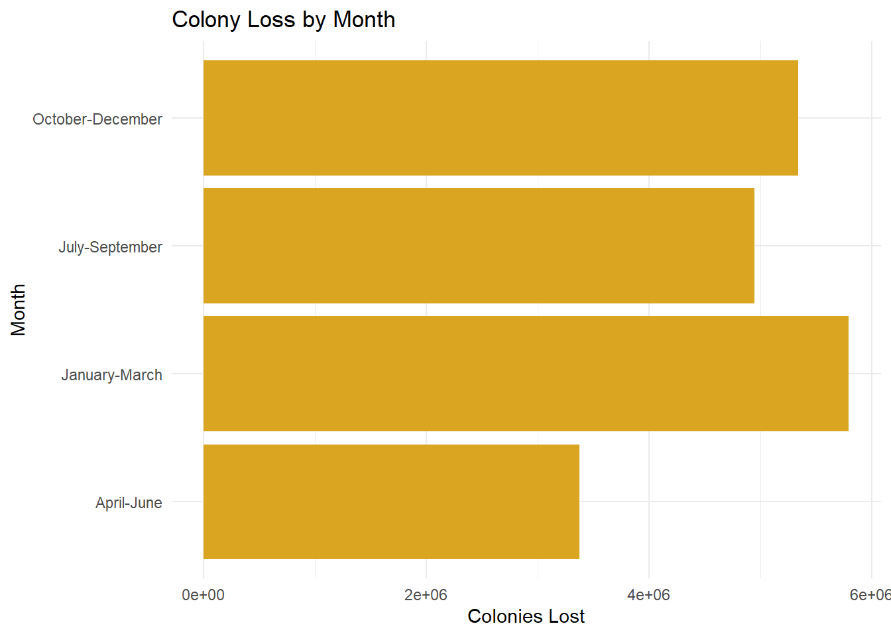
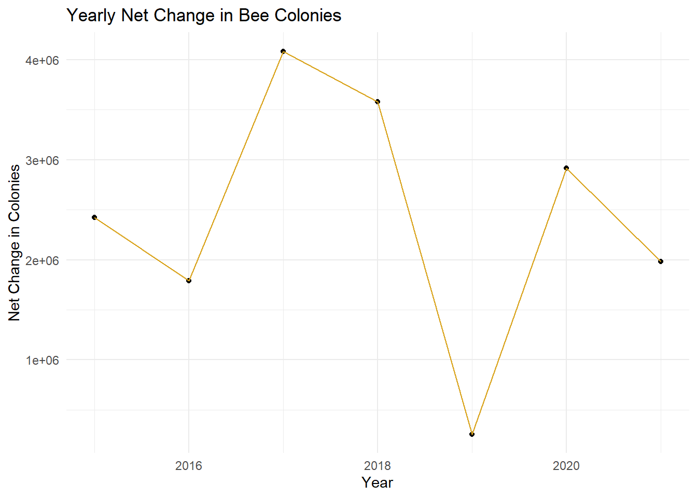
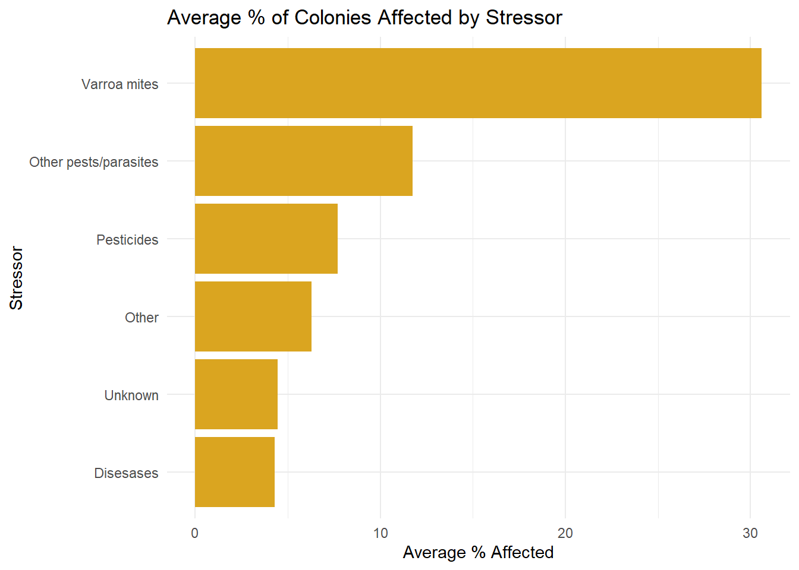
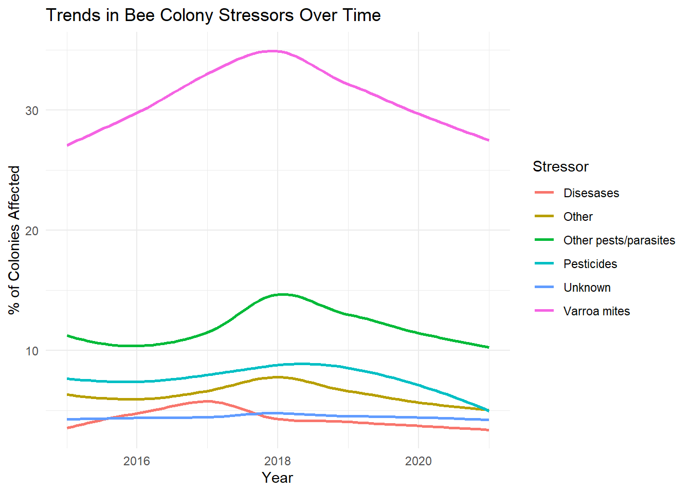

Portfolio 10 - BEES
So - fun fact … I am obsessed with bees. Absolutely love them, raised a couple honey bee colonies for a while… I can give you a lot of nerdy information that no one needs to know (other than apiarist). BUT, we are currently facing a national bee crisis - there has been a 60-70% loss of our bee population. The bees are in their worst state and this has been the largest loss in recorded history. Hence - I wanted to play around with this Tidy Tuesday data!
library(haven)
library(tidyr)
library(tidyverse)## ── Attaching core tidyverse packages ──────────────────────── tidyverse 2.0.0 ──
## ✔ dplyr 1.1.4 ✔ purrr 1.0.4
## ✔ forcats 1.0.0 ✔ readr 2.1.5
## ✔ ggplot2 3.5.2 ✔ stringr 1.5.1
## ✔ lubridate 1.9.4 ✔ tibble 3.2.1
## ── Conflicts ────────────────────────────────────────── tidyverse_conflicts() ──
## ✖ dplyr::filter() masks stats::filter()
## ✖ dplyr::lag() masks stats::lag()
## ℹ Use the conflicted package (<http://conflicted.r-lib.org/>) to force all conflicts to become errorslibrary(ggplot2)tuesdata <- tidytuesdayR::tt_load('2022-01-11')## ---- Compiling #TidyTuesday Information for 2022-01-11 ----
## --- There are 2 files available ---
##
##
## ── Downloading files ───────────────────────────────────────────────────────────
##
## 1 of 2: "colony.csv"
## 2 of 2: "stressor.csv"colony <- tuesdata$colonystressor <- readr::read_csv('https://raw.githubusercontent.com/rfordatascience/tidytuesday/main/data/2022/2022-01-11/stressor.csv')## Rows: 7332 Columns: 5
## ── Column specification ────────────────────────────────────────────────────────
## Delimiter: ","
## chr (3): months, state, stressor
## dbl (2): year, stress_pct
##
## ℹ Use `spec()` to retrieve the full column specification for this data.
## ℹ Specify the column types or set `show_col_types = FALSE` to quiet this message.Colony Data
Tracking Colony losses over time
ggplot(colony, aes(x = as.numeric(year), y = colony_lost)) +
geom_point() +
geom_smooth(method = "loess", se = FALSE, color = "goldenrod") +
labs(
x = "Year",
y = "Number of Colonies Lost",
title = "Colonies Lost Over Time"
) +
theme_minimal()## `geom_smooth()` using formula = 'y ~ x'## Warning: Removed 47 rows containing non-finite outside the scale range
## (`stat_smooth()`).## Warning: Removed 47 rows containing missing values or values outside the scale range
## (`geom_point()`). From this data graph it does not appear like tehre are drastic changes in the number of colonies lost between 2015 and 2021.
Colony health by state
colony_state <- colony %>%
group_by(state) %>%
summarise(avg_pct_lost = mean (colony_lost_pct, na.rm = TRUE))ggplot(colony_state, aes(x = reorder(state, avg_pct_lost), y = avg_pct_lost)) +
geom_col(fill = "goldenrod") +
coord_flip() +
labs(
x = "State",
y = "Average % Colonies Lost",
title = "Average Bee Colony Loss by State"
) +
theme_minimal() +
theme(
axis.text.y = element_text(size = 6, margin = margin(r = 5)),
plot.title = element_text(hjust = 0.3)
) It looks like Kansas is responsible for the largest percentage of colonies lost - though this may be attributable to a large bee population due to the agricultural nature of the state or perhaps the large amount of pesticides used for said agriculture may be the cause of the problem…
New Jersey is doing pretty well.
Seasonal Impact
colony_month <- colony %>%
group_by(months) %>%
summarize(total_colony_lost = sum(colony_lost, na.rm = TRUE))ggplot(colony_month, aes(x = months, y = total_colony_lost)) +
geom_col(fill = "goldenrod") +
coord_flip() +
labs(
x = "Month",
y = "Colonies Lost",
title = "Colony Loss by Month"
) +
theme_minimal() 
It appears that the most colonies are lost in the colder months Oct - March, as would be expected. There are many reasons colonies do not make it through the winter including starvation, freezing to death, and pests. Jan-March is when the most losses are seen.
Colony Net Change
colony <- colony %>%
mutate(net_change = colony_added + colony_reno - colony_lost)colony_year_net <- colony %>%
group_by(year) %>%
summarize(net_change = sum(net_change, na.rm = TRUE))ggplot(colony_year_net, aes(x = as.numeric(year), y = net_change)) +
geom_point() +
geom_line(color = "goldenrod") +
labs(x = "Year",
y = "Net Change in Colonies",
title = "Yearly Net Change in Bee Colonies"
) +
theme_minimal()
Looking at the net change 2017 was a poor year for the bees but 2019 was a pretty good year. From this graph it looks like bee losses have decreased from 2020 on … however that is far from what we are seeing now.
Stressor Data
Common Stressors
stress_sum <- stressor %>%
group_by(stressor) %>%
summarize(avg_stress = mean(stress_pct, na.rm = TRUE)) %>%
arrange(desc(avg_stress))ggplot(stress_sum, aes(x = reorder(stressor, avg_stress), y = avg_stress)) +
geom_col(fill = "goldenrod") +
coord_flip() +
labs(title = "Average % of Colonies Affected by Stressor",
x = "Stressor", y = "Average % Affected") +
theme_minimal() Varroa mites are horrible - based on first hand account they cause CCD (colony collapse disorder) all the time. They are hard to detect, treat, spread like wild fire, and tear apart hives. Just in case you were wondering - a lot of bee keepers put bees in powdered sugar to see if they have mites. I would not be surprised if the mites have become an increasingly larger issue.
Stressors Over Time
stressor$year <- as.numeric(stressor$year)ggplot(stressor, aes(x = year, y = stress_pct, color = stressor)) +
geom_smooth(se = FALSE, method = "loess") +
labs(
title = "Trends in Bee Colony Stressors Over Time",
x = "Year",
y = "% of Colonies Affected",
color = "Stressor"
) +
theme_minimal()## `geom_smooth()` using formula = 'y ~ x'## Warning: Removed 843 rows containing non-finite outside the scale range
## (`stat_smooth()`).
Mites. Mites. Mites.
I would be curious to see current data and how it fits into these trends.
Here is a picture of one of my queens, Beatrice (they are elusive). The dot you see on her back is paint - queens are marked in accordance with a color code to know which year they hatched and presumably mated so you have an estimate of their age.
The queen for my other hive, Bhramari, was very fast and I never got a picture of her, but she was all black and very pretty.
C:/Users/crawl/OneDrive - Wake Forest University/GitHub/Portfolio/images/IMG_1470.PNG